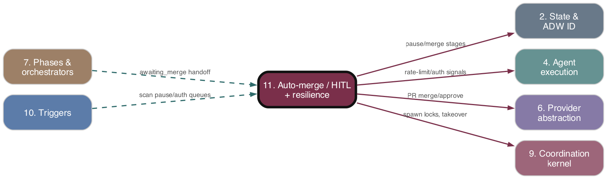

Auto-merge / HITL + resilience queues
As-is reference. Ground truth: source code.

Purpose
The governance + pause/resume layer. It (a) decides whether a PR may be merged automatically — a stateless gate that requires (no hitl label) OR (PR approved) — and runs the conflict-resolving merge; and (b) keeps the fleet alive across rate-limit/billing stalls and host-wide auth loss via durable pause queues plus cron scanners that probe, resume, and notify. It also reaps orphaned dev-server processes.
Responsibilities
- Stateless auto-merge gate: silently skip when
hitllabel present and PR unapproved; applyhitl+ post one-time comment on first unapproved encounter (in-process phase path). - Merge orchestration: dry-run conflict detection,
/resolve_conflictagent retries (up toMAX_AUTO_MERGE_ATTEMPTS=3), push,gh pr merge; non-conflict failures stop retries. adwMerge.tsxhandoff for theawaiting_mergestage: resolve branch→PR, handle MERGED/CLOSED/OPEN, escalate tomerge_blocked(human## Retryrecovers) ordiscarded.- HITL board notifier: Slack messages on In-Review / discarded / review-error transitions (only when issue carries
hitl). - Label lifecycle: provision and apply the
adw:*label set; thehitllabel is the human-gating flag. - Rate-limit/billing pause queue (
agents/paused_queue.json) + cron scanner that probes Claude and resumes. - Host-wide auth gate (
agents/.auth_gate) + auth-pause handler + auth-queue scanner that resumespaused_authorchestrators after re-login; Slack detection/recovery alerts with cooldown. - Dev-server janitor: cron sweep killing orphaned dev-server process groups;
withDevServerlifecycle helper.
Key Files
| Path | Role |
|---|---|
| --- | --- |
| adws/phases/autoMergePhase.ts | In-process auto-merge phase; hitl gate + approval gate + merge |
| --- | --- |
| adws/adwMerge.tsx | Standalone merge orchestrator for awaiting_merge handoff |
| --- | --- |
| adws/triggers/autoMergeHandler.ts | mergeWithConflictResolution retry loop (conflict detect → /resolve_conflict → push → merge) |
| --- | --- |
| adws/phases/authPause.ts | handleAuthRequiredPause / markStatePausedAuthForLiveOrchestrator |
| --- | --- |
| adws/phases/workflowCompletion.ts | handleRateLimitPause — enqueues to pause queue, writes paused, exits 0 |
| --- | --- |
| adws/core/pauseQueue.ts | Atomic read/append/remove/update on agents/paused_queue.json |
| --- | --- |
| adws/core/authGate.ts | agents/.auth_gate record; Slack-cooldown predicate |
| --- | --- |
| adws/core/slackNotifier.ts | postSlack + auth detection/recovery payloads |
| --- | --- |
| adws/core/devServerLifecycle.ts | withDevServer spawn→probe→work→kill (no production consumers wired) |
| --- | --- |
| adws/triggers/pauseQueueScanner.ts | scanPauseQueue / resumeWorkflow — probe rate-limit, respawn |
| --- | --- |
| adws/triggers/scanAuthQueue.ts | scanAuthQueue — resume paused_auth via takeover branch 5 |
| --- | --- |
| adws/triggers/devServerJanitor.ts | runJanitorPass — kill orphaned worktree processes |
| --- | --- |
| adws/github/hitlBoardNotifier.ts | notifyReviewTransition / notifyBlockedTransition Slack delivery |
| --- | --- |
| adws/github/labelManager.ts | adw:* label definitions + ensureAdwLabelsExist / applyLabel |
| --- | --- |
| adws/triggers/trigger_cron.ts | Wires handleAuthGateTick, scanPauseQueue, scanAuthQueue, runJanitorPass into the cron tick |
Behavior & Flows
Auto-merge gate (stateless). Both autoMergePhase and adwMerge.executeMerge re-evaluate live label + approval state every entry. adwMerge unified gate (step 5b): if hitl on issue AND PR not approved → log + return, no state write/comment. autoMergePhase: if hitl present → silent skip; else if no APPROVED review → apply hitl, post one-time comment, exit. When the gate passes, mergeWithConflictResolution runs.
Merge loop. syncWorktreeToOriginHead → up to 3 attempts: checkMergeConflicts (dry-run git merge --no-commit), on conflict invoke /resolve_conflict (sonnet) agent, push branch, gh pr merge. isMergeConflictError distinguishes retryable conflict races from terminal failures. adwMerge outcomes: MERGED→completed; CLOSED→discarded (+ notifyBlockedTransition); merge-fail→merge_blocked (recover via ## Retry); no-PR after 3 attempts→merge_blocked.
Rate-limit pause/resume. A phase agent throwing RateLimitError (Claude stream rate-limit text) → phaseRunner → handleRateLimitPause: writes paused, appends {adwId, issueNumber, orchestratorScript, pausedAtPhase, worktreePath, branchName, extraArgs(--target-repo)} to pause queue, posts paused comment, exits 0. scanPauseQueue (every PROBE_INTERVAL_CYCLES=15 cron cycles): runs claude --print "ping" --model haiku → clear/limited/unknown. clear→resumeWorkflow (verify worktree exists, acquire spawn lock, confirm canonical adwId, respawn detached, await 2 s readiness, remove from queue, post resumed). unknown increments probeFailures; at MAX_UNKNOWN_PROBE_FAILURES=3 removes + posts error.
Auth gate pause/resume. Agent OAuth-expiry → AuthRequiredError → handleAuthRequiredPause: writeAuthGate, state paused_auth, exit 0. On each cron tick handleAuthGateTick: if gate set, run claude auth status --json. Logged-in→clearAuthGate, scanAuthQueue (rewrite each paused_auth→abandoned, route through takeover branch 5, respawn with original adwId), Slack recovery. Not-logged-in→SIGTERM live orchestrators + mark paused_auth, send Slack detection (cooldown SLACK_DETECTION_COOLDOWN_MS=2h). Auth-gate tick short-circuits the rest of the cron tick.
Dev-server janitor. runJanitorPass (every JANITOR_INTERVAL_CYCLES=15): discover worktrees under TARGET_REPOS_DIR, lsof for live processes, shouldCleanWorktree keeps them only if (non-terminal stage AND orchestrator alive) OR age ≤ 30 min grace; else SIGTERM→SIGKILL the process group.
Data Structures
PausedWorkflow(pauseQueue.ts):{ adwId, issueNumber, orchestratorScript, pausedAtPhase, pauseReason: 'rate_limited'|'unknown_error', pausedAt, lastProbeAt?, probeFailures?, worktreePath, branchName, extraArgs? }.AuthGateRecord(authGate.ts):{ firstDetectedAt, lastDetectedAt, lastSlackNotifiedAt, host, lastDetectedBy: {adwId, issueNumber, agentName} }.DevServerConfig{ startCommand, port, healthPath, cwd };WorktreeCandidate{ worktreePath, dirName };JanitorDeps(injectable OS seam).MergeRunResult{ outcome: 'completed'|'abandoned', reason };MergeDeps(injectable seam).adw:*label set: chore/bug/feature/pr_review/upgrade/none/unverified/blocked (withname,color,description).hitlis referenced by name (not in this canonical set).
Public Interface
executeAutoMergePhase(config)→{costUsd, modelUsage, phaseCostRecords}.executeMerge(issueNumber, adwId, repoInfo, baseRepoPath, deps)→MergeRunResult.mergeWithConflictResolution(prNumber, repoInfo, headBranch, baseBranch, worktreePath, adwId, logsDir, specPath)→{success, error?};isMergeConflictError(s).- pauseQueue:
readPauseQueue / appendToPauseQueue / removeFromPauseQueue / updatePauseQueueEntry. scanPauseQueue(cycleCount),resumeWorkflow(entry),resolveEntryRepoInfo(entry).- authGate:
readAuthGate / writeAuthGate / clearAuthGate / markGateSlackNotified / shouldSendDetectionSlack. handleAuthRequiredPause(config, err, costUsd?, modelUsage?),markStatePausedAuthForLiveOrchestrator(adwId),handleRateLimitPause(...).scanAuthQueue(cronRepoInfo, targetRepoArgs, takeoverDeps?, deps?)→ resumed count.runJanitorPass(deps?),shouldCleanWorktree(...),withDevServer(config, work).notifyReviewTransition(args, deps?),notifyBlockedTransition(args, deps?).- labelManager:
ensureAdwLabelsExist,applyLabel,readAdwLabels,issueTypeToAdwLabel.
Dependencies
- Upstream (depends on):
- Agent execution 04. Agent execution">(#4) —
RateLimitError/AuthRequiredErrorthrown from Claude stream;/resolve_conflictagent run. - State & ADW ID 02. State & ADW ID">(#2) —
AgentStateManagertop-level/orchestrator state,paused/paused_auth/awaiting_merge/merge_blockedstages. - GitContext 03. GitContext">(#3) / Provider abstraction 06. Provider abstraction">(#6) —
gitContextForRepo,RepoInfo/repoContext,ghPR/issue/label/merge calls. - Config & Environment 01. Config & Environment">(#1) —
PROBE_INTERVAL_CYCLES,MAX_UNKNOWN_PROBE_FAILURES,JANITOR_INTERVAL_CYCLES,MAX_AUTO_MERGE_ATTEMPTS,SLACK_WEBHOOK_URL. - Coordination kernel 09. Coordination kernel">(#9) — spawn locks (
acquireIssueSpawnLock),evaluateCandidatetakeover,findHungOrchestrators. - Downstream (depended on by):
- Triggers 10. Triggers">(#10) —
trigger_croninvokes the scanners/janitor/auth-gate tick each cycle. - Phases & orchestrators 07. Phases & orchestrators">(#7) — orchestrators call
handleRateLimitPause/handleAuthRequiredPauseand runexecuteAutoMergePhase.
Interactions
| Other subsystem | Direction | What is exchanged |
|---|---|---|
| --- | --- | --- |
| Agent execution 04. Agent execution">(#4) | in | RateLimitError/AuthRequiredError (Claude stream); /resolve_conflict agent invocation |
| --- | --- | --- |
| State & ADW ID 02. State & ADW ID">(#2) | in/out | reads/writes workflow stages; pause-queue + auth-gate JSON sidecar files |
| --- | --- | --- |
| Triggers 10. Triggers">(#10) | in | cron tick drives scanPauseQueue/scanAuthQueue/runJanitorPass/auth-gate handling |
| --- | --- | --- |
| Coordination kernel 09. Coordination kernel">(#9) | in | spawn locks, takeover branch 5 for auth-resume, hung-orchestrator sweep |
| --- | --- | --- |
| Phases & orchestrators 07. Phases & orchestrators">(#7) | in/out | auto-merge phase invoked post-review; pause handlers called on errors |
| --- | --- | --- |
| Provider abstraction 06. Provider abstraction">(#6) / GitContext 03. GitContext">(#3) | out | gh label/PR/issue/merge ops via RepoInfo/repoContext |
| --- | --- | --- |
| Cost telemetry & D1 13. Cost telemetry & D1">(#13) | out | persistTokenCounts on pause; createPhaseCostRecords for auto_merge |
| --- | --- | --- |
| Triggers/Coordination | out | detached respawn of paused orchestrators (bunx tsx <script> <issue> <adwId> --target-repo) |
PRD Divergences
orchestrator-coordination-resilience.mdorients the pause-queue + auth-gate + hung-detector design; implementation matches at the level inspected (durable JSON queues, probe-and-resume, Slack cooldown).test-review-refactor.mddescribes the dev-server lifecycle;devServerLifecycle.withDevServerexists but its own header notes "No production consumers are wired yet — pure infrastructure." The cron janitor (runJanitorPass) is the only live dev-server consumer and reaps orphans rather than managing a lifecycle.